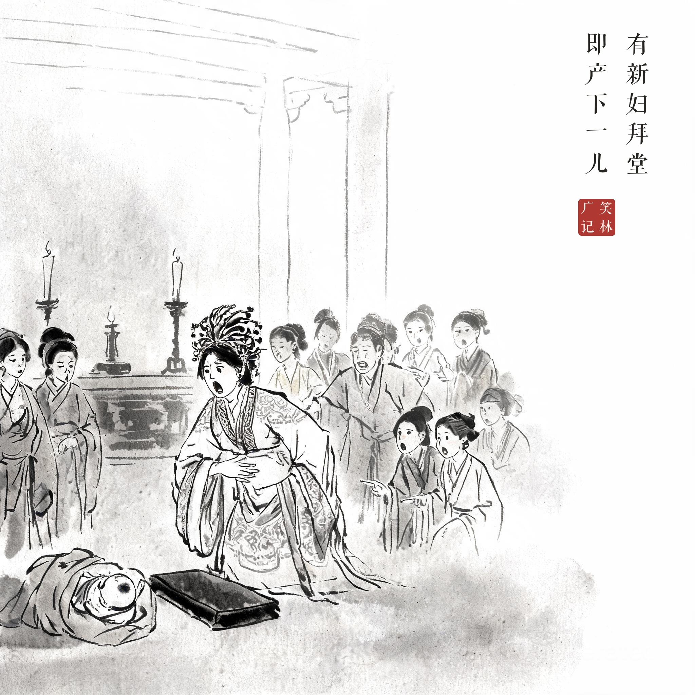
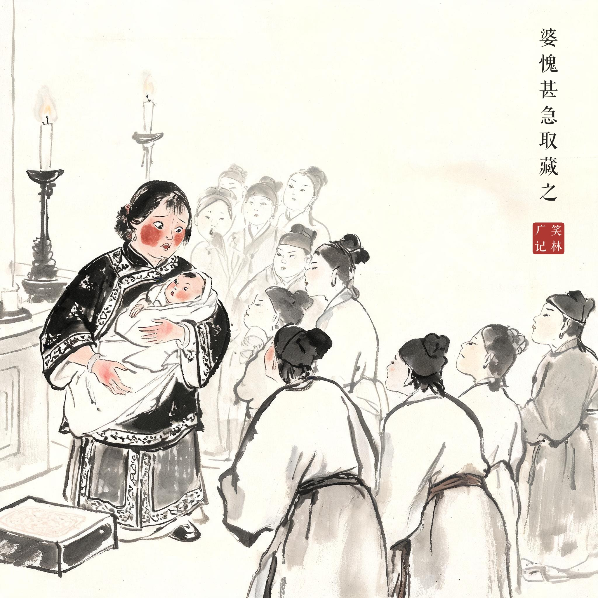
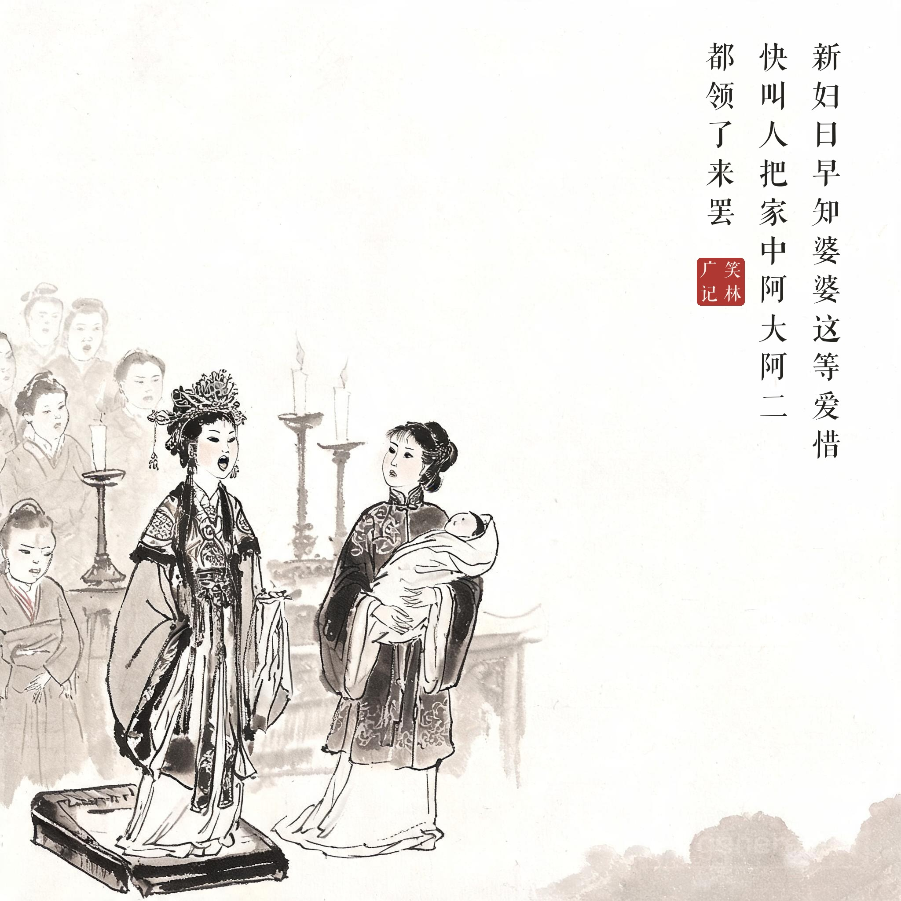

笑林广记 · 笑话组画
23 拜堂产儿
系列：笑林广记 · 水墨笑话组画 · 闺风部 | 3 幕 | 2K（2048×2048）| aicloud-seedream / 每幕题款＝该幕原文（清刻本悦宋合成，无标点）| 印章：笑林广记

其01 · 拜堂即产有新妇拜堂 / 即产下一儿
拜堂方毕婴儿落地，宾客哗然

其02 · 婆愧藏之婆愧甚急取藏之
婆婆涨红着脸用喜帕裹起婴儿

其03 · 阿大阿二新妇曰早知婆婆这等爱惜 / 快叫人把家中阿大阿二 / 都领了来罢
新妇大大方方扬声，婆婆僵在原地
出处
《笑林广记 · 闺风部》（[清]游戏主人纂集）
原文
有新妇拜堂，即产下一儿，婆愧甚，急取藏之。新妇曰："早知婆婆这等爱惜，快叫人把家中阿大、阿二都领了来罢。"
白话
有个新娘刚拜完堂，当场就生下一个孩子。婆婆羞得不行，赶忙抱起来藏好。新娘说："早知道婆婆这么疼孩子，快叫人把家里的老大老二也都领过来吧！"
画意
"既然婆婆这么爱惜孙子，把前头几个也领来一起疼吧"——新娘一席话自曝得理直气壮，婆婆藏得欲盖弥彰。